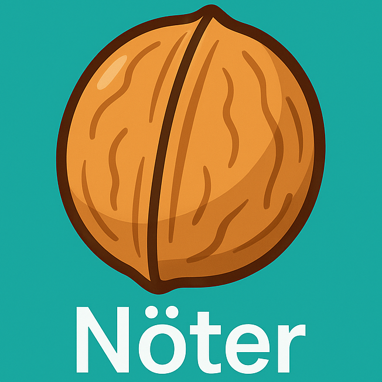

Nöter
Flashcards – Indefinita pronomen
Franska ↔ Svenska · Tryck för att vända · Svep för nästa
Blandad
FR → SV
SV → FR
Laddar…
Tryck för att vända
—
Tryck igen för att vända tillbaka
↺ Vänd
🎲 Nästa kort